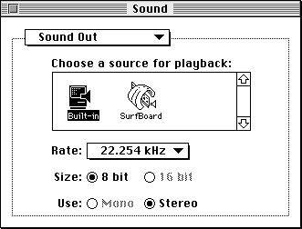
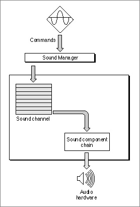
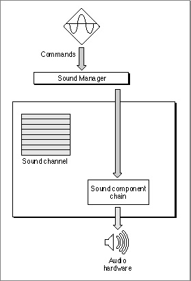
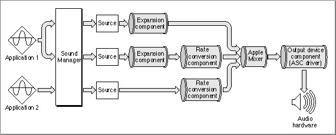

Important: Inside Macintosh: Sound is deprecated as of Mac OS X v10.5. For new audio development in Mac OS X, use Core Audio. See the Audio page in the ADC Reference Library.
Sound Production
A Macintosh computer produces sound when the Sound Manager sends some data through a sound channel to the available audio hardware, usually at the request of an application. The audio hardware is a digital-to-analog converter (DAC) that translates digital sound data into analog audio signals. Those signals are then sent to the internal speaker, to a sound output connector (to which the user can connect headphones, external speakers, or sound amplification equipment), or to other sound output hardware.The DAC in Macintosh Plus and Macintosh SE computers is a Sony sound chip. The Macintosh II, Macintosh Portable, Macintosh PowerBook and Macintosh Quadra families of computers contain two Sony sound chips (to provide stereo output capability) as well as the Apple Sound Chip (ASC), a customized chip that provides enhanced audio output characteristics as well as emulation capabilities for the earlier sound hardware.
Some recent models of Macintosh computers contain built-in sound hardware that extends the Apple Sound Chip's features. For example, Macintosh computers with built-in microphones include the Enhanced Apple Sound Chip (EASC). Some Macintosh computers contain DSP chips that provide very high-quality sound (16-bit stereo sound, at rates up to 44 kHz). There are also NuBus expansion cards available from third-party developers that provide other audio DAC hardware.
A user can select a sound output device or control characteristics of the selected device through the Sound Out control panel, shown in Figure 1-6. The available sound output devices are listed in the center of the panel. In this case, two sound output devices are attached to the computer, the built-in speaker and a speaker attached to the SurfBoard DSP card. The highlighted icon shows which device is the current sound output device. All sounds produced by the Sound Manager are sent to that device for playback, unless you specify some other device when creating a sound channel. (See the description of
SndNewChannelin the chapter "Sound Manager" for details on specifying an output device explicitly.)Figure 1-6 The Sound Out control panel

You can play a sound by calling a Sound Manager routine such as
- Note
- This book shows the Sound control panels introduced with version 3.0 of the Sound Manager. Users can use the pop-up menu at the top of the panel to select one of four or more subpanels (Alert Sounds, Sound In, Sound Out, and Volumes). It's possible to add new subpanels to the Sound control panel. See the chapter on control panel extensions in the book Inside Macintosh: Operating System Utilities.

SysBeep(to play the system alert sound),SndPlay(to play a sound stored in memory), orSndStartFilePlay(to play a sound stored in a file). The Sound Manager then issues one or more sound commands to the audio hardware. A sound command is an instruction to produce sound, modify sound, or otherwise assist in the overall process of sound production.To ensure that sound commands are issued in the correct order, the Sound Manager uses a structure called a sound channel to store commands. A sound channel is associated with a first-in, first-out (FIFO) queue of sound commands. Queued commands are sent to the sound hardware through a sound output device component, a component that manages the last stage of communication with the audio hardware. Figure 1-7 shows how your application communicates, through the Sound Manager and the sound output device component, with the current sound output device.
Figure 1-7 The relation of the Sound Manager to the audio hardware

You can play sounds either synchronously or asynchronously. When you play a sound synchronously, the Sound Manager alone has control over the CPU while it executes commands in a sound channel. Your application does not continue executing until the sound has finished playing. When you play a sound asynchronously, your application can continue other processing while the sound is playing. This chapter shows how to play sounds only synchronously. To learn how to play sounds asynchronously, see the chapter "Sound Manager" in this book.
- Note
- This chapter does not discuss sound commands or channels in detail, because you do not need to know about these details to play sound data stored in sound resources or sound files. This chapter describes only how to play and record sampled sounds. For more information on sound channels and sound commands, see the chapter "Sound Manager" in this book.
Sometimes it is necessary to bypass the queue of sound commands. If, for example, you want to stop all sound production on a particular channel immediately, it would be counterproductive to put the command into the sound channel because that command wouldn't be processed until any others already in the queue were processed. You can send sound commands directly to the hardware component, as shown in Figure 1-8.
When you bypass the sound channel in this way, any commands that are already queued but not yet sent to the sound output device component remain queued. You can, however, flush the channel at any time by sending the Sound Manager the appropriate request.
Figure 1-8 Bypassing the command queue

It's possible to have several channels of sound open at one time. The Sound Manager (using a sound-mixing component called the Apple Mixer component) mixes together the data coming from all open sound channels and sends a single stream of sound data to the current sound output device. This allows a single application to play two or more sounds at once. It also allows multiple applications to play sounds at the same time, as illustrated in Figure 1-9.Figure 1-9 Mixing multiple channels of sampled sound

The Sound Manager was first released for all Macintosh computers as part of system software version 6.0. System software versions 6.0.7 and later include an enhanced Sound Manager (that is, version 2.0) that provides routines for continuous play from disk, sound mixing, and audio compression and expansion. System software versions 6.0.7 and later also include the Sound Input Manager, which allows for recording sounds through either a built-in microphone or some other sound input device.More recent versions of the Sound Manager significantly improve the performance of the Sound Manager's operations and extends its capabilities. Version 3.0 of the Sound Manager is as much as two to three times more efficient than previous versions, which allows your application to do more processing while a sound is playing. In addition, version 3.0 of the Sound Manager provides three important new capabilities:
You provide support for your own sound output devices or for your own compression and decompression algorithms by writing an appropriate sound component. See the chapter "Sound Components" later in this book for complete details.
- Support for 16-bit audio samples. Versions of the Sound Manager earlier than version 3.0 support only 8-bit monophonic or stereo audio samples with sample rates up to 22 kHz. The Sound Manager version 3.0 supports 16-bit stereo audio samples with sample rates up to 64 kHz, thereby allowing your application to produce CD-quality sound. Moreover, the Sound Manager version 3.0 automatically converts 16-bit samples into 8-bit samples on Macintosh computers that do not have the hardware to output 16-bit sounds.
- Support for non-Apple audio hardware. The Sound Manager version 3.0 and later use a sound architecture that allows support for third-party audio hardware. This allows a user to install audio hardware capable of recording and producing CD-quality sound. Versions 3.0 and later also include a new Sound control panel that allows the user to redirect sound output to any available audio hardware.
- Support for plug-in codecs. Versions of the Sound Manager earlier than version 3.0 support audio compression and expansion only at ratios of 3:1 and 6:1. The Sound Manager version 3.0 provides support for other compressed audio data formats by allowing plug-in audio compression and expansion components (or codecs).
The Sound Manager version 3.0 is supported only on Macintosh computers with an ASC or comparable hardware. In particular, the Sound Manager version 3.0 is not supported on Macintosh Classic, Macintosh Plus, or Macintosh SE computers. As a result, you should always test whether the specific capabilities you want to use are present before attempting to use them. You can use the
Gestaltfunction to do this, as illustrated in "Checking For Sound-Recording Equipment" beginning on page 1-27 and in "Checking For Speech Capabilities" beginning on page 1-31.This book describes the capabilities and programming interfaces of version 3.0 of the Sound Manager. Many of the techniques described here can also be used with earlier versions of the Sound Manager, but some cannot. Make sure to test your application thoroughly with all versions of the Sound Manager you want to run under.